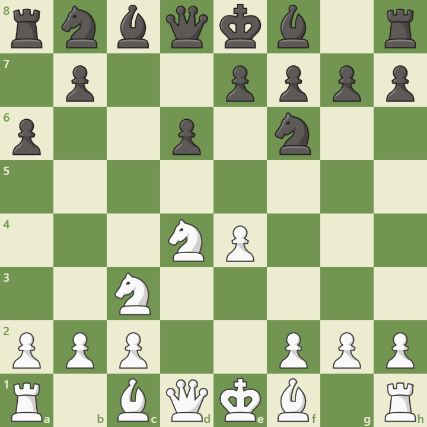

Overview
The Sicilian Najdorf is one of the most aggressive and deeply analyzed openings in chess. It begins with:
1. e4 c5 2. Nf3 d6 3. d4 cxd4 4. Nxd4 Nf6 5. Nc3 a6
Black delays development to control b5 and prepare counterplay. It’s a favorite of attacking players and world champions.
Opening Diagram
This position arises after 5...a6, preventing Nb5 and preparing ...e5 or ...b5.
Main Variations
- English Attack: Be3, Qd2, f3 – kingside pawn storm
- Poisoned Pawn: ...Qxb2 – sharp tactical line
- Scheveningen Setup: ...e6 – solid and flexible
Strategic Themes
- Queenside expansion with ...b5 and ...Bb7
- Central tension and ...e5 breaks
- Sharp tactical battles and deep preparation